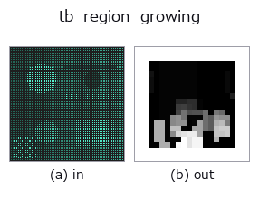

typed op• 데이터 종류: points → volume
• 호출: fullseye.apply(img, "tb_region_growing", a=0.5, b=0.5)(2-D 는 이미지 1 장 + 스칼라 노브 2 개 a,b∈[0,1] 모델)

*그림은 128×128 합성 입력에서 실제로 실행한 출력. 왼쪽이 입력, 오른쪽이 출력. 점군은 위에서 본 산점도(밝기 = z), 1-D 열은 꺾은선, 볼륨은 z 방향 최대값 투영, 동영상은 가운데 프레임, 복소 영상은 진폭이며, 그림이 되지 않는 반환값은 값 자체를 표시한다.*
노브 a 를 훑기(0.1 / 0.5 / 0.9, 다른 노브는 기본값):
▸ tb_region_growing: 노브 a 스윕 (문서 사이트)
노브 b 를 훑기(0.1 / 0.5 / 0.9, 다른 노브는 기본값):
▸ tb_region_growing: 노브 b 스윕 (문서 사이트)
단계(앞에 오는 op → 이 op, 왼쪽에서 오른쪽으로):
▸ tb_region_growing: 단계 (문서 사이트)
다른 영상에서도(합성 장면 / 사진 / 동전. 윗줄이 입력, 아랫줄이 그 출력. 노브는 기본값):
▸ tb_region_growing: 다른 입력 이미지 (문서 사이트)
움직임(GIF: 프레임 / 시점 / 슬라이스를 차례로. 정지 그림이 완성형이고 GIF는 보조):
법선 유사도로 영역을 성장시켜 연결된 매끄러운 영역에 동일 라벨을 부여한다(곡률 게이트 없는 변형).
각 점을 k 근방 그래프 위에서 BFS로 성장시키며, 인접점 q를 "법선 n_p와 n_q가 이루는 각이 angle_thresh_deg 미만"일 때만 같은 영역에 더한다. 평면 안의 법선은 거의 평행하므로같은 영역으로 연결되고, 방향이 다른 면의 경계에서는 각이 벌어져 연결이 끊긴다 → 면마다 별도 영역. 법선은 부호가 정해지지 않으므로(PCA 유래) |n_p·n_q|로 판정한다(앞뒤를 같은 것으로 본다).
Args:
points: (N,3) 점군.
normals: (N,3) 단위 법선. None이면 pointcloud.estimate_normals로 PCA 추정.
angle_thresh_deg: 인접 법선 각도의 허용 상한[도]. (0,180) 범위.
k: 근방 수(kNN 그래프의 차수).
Returns:
labels: (N,) int. 연결된 평활 영역마다 0,1,2,...를 부여. min_region_size 미만의작은 영역(고립점, 방향 불일치 찌꺼기)은 -1(잡음/미할당) = 통일 계약(-1=잡음)을 따른다.
빈 입력은 shape (0,)을 반환한다.
2-D 진화 레지스트리로 연결한 3d의 op region_growing. 구현은 같고, 호출 규약만 op(v, a, b)에 맞췄다. a는 angle_thresh_deg(기본값 15), b는 k(기본값 20)를 바꾼다.
• 샘플 데이터 카탈로그(DL URL / 라이선스) —— 2-D 는 skimage.data(BSD/public)+ 합성, 3-D 는 실데이터 소스(Stanford/PDS 등)의 DL URL.
• 연산자의 내력·참고문헌 —— 이 연산자 족의 바탕이 된 연구/기법의 출처.
아래 프로그램은 실제로 실행됨을 확인했습니다(그림과 같은 입력). Studio 도움말에서는 이 블록이 버튼이 되어 즉시 불러와 실행할 수 있습니다.
img_to_points 0.50 0.50 tb_region_growing 0.50 0.50
아래 예제는 원래의 대장 op region_growing를 호출한다. 이 브리지 op는 같은 구현을 fn(v, a, b) 규약에 맞춘 것뿐이므로 동작은 그대로 적용된다(호출 형식만 다름).
• sensor_seg — py -3.11 examples_3d/sensor_seg.py
volume 를 입력으로 받는 것)identity · vol_gaussian · vol_median · vol_erode · vol_dilate · vol_threshold · vol_reg_dilate · vol_reg_erode
typed)tb_points_to_voxel · tb_estimate_point_normals · tb_iss_keypoints · tb_project_points · tb_render_point_depth · tb_statistical_outlier_removal · tb_radius_outlier_removal · tb_voxel_grid_downsample
*Provenance: ops.py — 2D 연산자 레지스트리. 이 op 노트는 tools/opdocs.py md 가 자동 생성합니다(직접 편집하지 마세요).*
© 2026 Kazufumi Furuse — Fullseye operator documentation. Licensed under Apache-2.0.